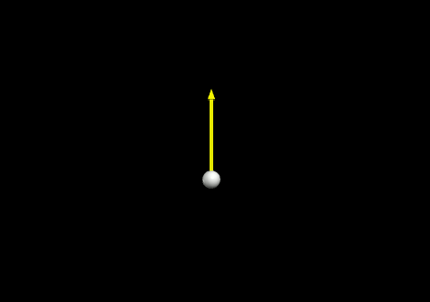
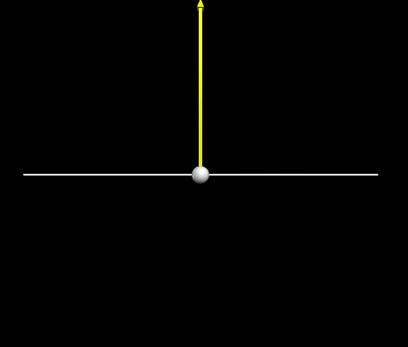

| Notes | Code and Results |
|---|---|
Motion without gravity.
We have a ball moving upward (in the y-direction) at 5 m/s, so its velocity vector is:
$$ \vec{v} = <0, 5, 0> $$
Notice that:
There is no motion in the x direction, but the same general equation applies in y, so: |
The result should look like:

|
Adding gravity (acceleration)Acceleration is the change in velocity (Δv) with time (Δt) so: $$ a = \dfrac{v_{new} - v_{old}}{\Delta t} $$ So for each timestep, we'll solve this equation for the new velocity (vnew ): $$ v_{new} = v_{old} + a \cdot \Delta t \tag{1}$$ The acceleration due to gravity (g) is: $$ a = g = -9.8 \, \text{m/s}^2 $$ So, for vertical, ballistic motion we can write the equation as: $$ v_{new} = v_{old} + g \cdot \Delta t \tag{2}$$ We can add this as a single line to the previous program, before we calculate the new position.
|
|
Add a floor
Add a floor to your model so the ball bounces.
|

|